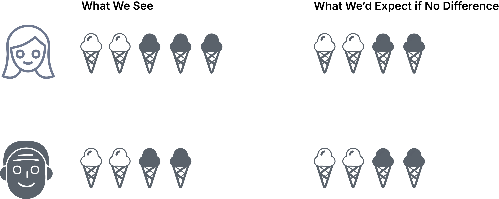

Below are several ways you could enhance the original text-based lesson using the Plus One approach. Each section represents a different way to make the content more accessible and engaging. Adding any one of these options to your original lesson would be an example of applying the Plus One principle.
Note: These are separate examples - you wouldn't necessarily use all of them at once. Choose the enhancement that best serves your learning objectives and student needs.
Enhancement Option 1: Real World Connection
Plus One Focus: Adding relatable examples to help students connect abstract statistical concepts to everyday situations.
Imagine you're wondering if there's a connection between two things - like whether people's ice cream flavor preferences are related to their age group. Are certain flavors more popular with certain age groups, or is it just random? The chi-square test helps us figure this out.
For example, if we observe that:
Young adults seem to prefer chocolate ice cream
Older adults seem to prefer vanilla ice cream
The chi-square test will tell us if this pattern is likely to be a real relationship or just a coincidence due to our small sample.
Enhancement Option 2: Visual Representation
Plus One Focus: Adding visual diagrams to help learners understand the concept of expected versus observed frequencies.

The chi-square test tells us how different these two pictures are. The bigger the difference, the more likely age affects ice cream choice.
Key Concept: Expected vs. Observed
The chi-square test compares:
What we expect if the variables are independent (no relationship)
What we actually observe in our data
The greater the difference between these two, the stronger the evidence of a relationship.
Enhancement Option 3: Video Demonstration
Plus One Focus: Adding step-by-step video explanation to support visual and auditory learners.
Video explanation with step-by-step walkthrough
Transcript
00:00:00.000 hey everybody today we're getting into
00:00:01.680 the chi-squared test for homogeneity
00:00:03.560 we're in this situation where we're
00:00:05.700 measuring one categorical variable
00:00:07.560 across two groups and asking whether the
00:00:10.349 groups are different or not whether they
00:00:11.550 come actually from the same population
00:00:13.790 here's an example
00:00:15.599 we've got people under 50 and people
00:00:17.940 over 50 and we're asking them do you
00:00:20.130 agree with the statement I prefer to
00:00:22.260 work from home as much as possible you
00:00:24.359 can either agree be neutral or disagree
00:00:26.730 here are our totals do young and old
00:00:29.550 people prefer working from home in equal
00:00:31.410 proportions so we've got a null
00:00:36.510 hypothesis that the probability of
00:00:38.219 agreeing with that statement is the same
00:00:40.079 in either group the probability of being
00:00:41.940 neutral is the same in either group and
00:00:44.010 so on we want to use a chi-square test
00:00:47.640 on this table and in order to do that
00:00:49.829 we're gonna need expected cell counts of
00:00:51.780 course as usual so how are we going to
00:00:55.020 do it well under the null hypothesis we
00:00:57.629 expect that the corresponding
00:00:59.940 respondents are going to have equal
00:01:01.199 proportions in each group the same
00:01:03.000 proportion in group a and Group B is
00:01:04.979 going to agree the same proportion is
00:01:06.960 going to be neutral the same proportion
00:01:08.520 is going to disagree and if in fact
00:01:10.860 those proportions are the same they'll
00:01:12.479 also be the same as the pooled
00:01:14.760 proportions
00:01:16.530 so the overall proportion that agreeing
00:01:19.830 neutral disagree so let's get those
00:01:24.119 pooled proportions we take the total
00:01:26.909 number that agree and take it over the
00:01:29.189 total number period the total number
00:01:31.079 that our Neutral take it over the total
00:01:32.430 number period and so on we're going to
00:01:35.700 multiply those by the different row
00:01:37.049 totals and those are going to give us
00:01:38.549 expected cell counts here's what we get
00:01:41.369 as usual we don't worry if our expected
00:01:44.159 counts aren't integers and now we're
00:01:47.759 going to compute a chi-squared statistic
00:01:48.840 in the usual way we're gonna do the
00:01:51.299 values we got - the ones we expected
00:01:53.430 square it and divide by the predicted
00:01:57.630 number the expected number add all those
00:01:59.549 up to get the chi-squared statistic
00:02:01.820 there's the calculation we get 6.8 for
00:02:05.750 the last thing we got to do before we
00:02:07.979 compute a p-value is to talk about
00:02:09.869 degrees of freedom so in this case we
00:02:12.420 have two independent
00:02:13.240 samples one for each row so we're
00:02:15.430 starting with four degrees of freedom we
00:02:18.070 had six total cells we take away those
00:02:20.320 two for the two independent samples we
00:02:24.250 also have to take away two degrees of
00:02:25.720 freedom because we estimated two
00:02:27.730 parameters one for each column except
00:02:30.040 the last which is determined by the
00:02:31.570 other two so overall we've got two
00:02:33.370 degrees of freedom we compute the
00:02:36.190 p-value as usual in a chi-squared
00:02:38.290 distribution probability that
00:02:40.120 chi-squared is greater than or equal to
00:02:41.710 that 6.8 for that we got in chi square
00:02:45.010 root of 2 and we get 0.03 3 so this
00:02:47.830 provides good evidence against the null
00:02:49.330 hypothesis we have good reason to
00:02:51.400 believe that in fact these two groups
00:02:53.320 young people and old people are
00:02:55.090 different in their opinions about
00:02:56.440 working from home
Plus One Focus: Adding hands-on interaction to help learners experiment with and understand how the chi-square calculation works.
Use this interactive tool to explore how chi-square tests work. Try adjusting the numbers in the table below to see how they affect the chi-square value. The bigger the difference between what we observe and what we expect, the stronger the relationship between age and ice cream choice.
How to Use This Tool
Click the + and - buttons to change the observed values
Watch how the expected values and chi-square update automatically
Try to create scenarios where the variables are clearly related vs. independent